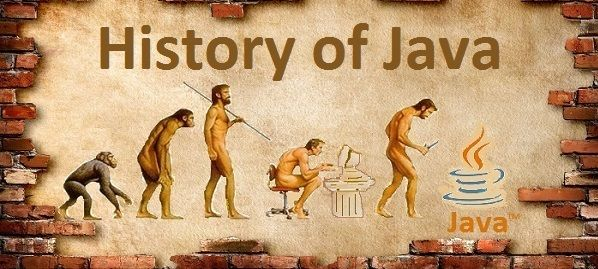
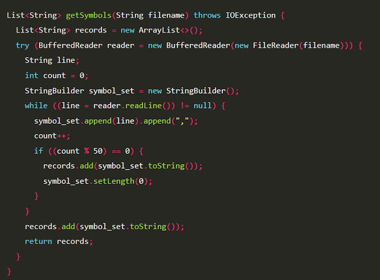

История создания

Язык Java был разработан Джеймсом Гослингом и его командой в компании Sun Microsystems. Работа началась в 1990 году в рамках проекта, целью которого было создание программного обеспечения для бытовых электронных устройств, таких как телевизионные приставки (set-top boxes).
Первоначально язык назывался Oak («Дуб»), но это имя оказалось уже занятым другой компанией. Позже язык переименовали в Java — название, по одной из версий, связано с сортом кофе, который любили программисты. В 1995 году Java была официально представлена публике и быстро приобрела популярность благодаря возможности запускать один и тот же код на разных платформах.
Ключевой особенностью Java стала концепция Write Once, Run Anywhere
— «Напиши один раз, запускай везде». Это достигается благодаря компиляции исходного кода в байт-код, который затем исполняется JVM — виртуальной машиной Java.
В 2010 году компания Oracle приобрела Sun Microsystems, и Java перешла под управление Oracle. Несмотря на смену владельца, язык продолжает активно развиваться: новые версии выходят каждые полгода, а сообщество разработчиков остаётся одним из крупнейших в мире. Подробнее с историей можно ознакомиться в статье Википедии.
Краткий обзор языка

Java — это объектно-ориентированный язык программирования общего назначения. Он спроектирован так, чтобы иметь как можно меньше зависимостей от конкретной реализации, что обеспечивает переносимость программ между различными операционными системами и аппаратными платформами.
Основные характеристики
- Объектно-ориентированный — всё в Java является объектом (кроме примитивных типов).
- Платформонезависимый — байт-код исполняется на любой JVM.
- Безопасный — отсутствует прямой доступ к памяти, нет указателей.
- Многопоточный — встроенная поддержка работы с потоками.
- Автоматическое управление памятью — сборщик мусора освобождает неиспользуемые объекты.
Типы данных
Java имеет 8 примитивных типов: byte, short, int, long, float, double, char и boolean. Все остальные типы являются ссылочными и наследуются от класса Object.
Области применения
| Сфера | Примеры технологий | Описание |
|---|---|---|
| Веб-разработка | Spring, Jakarta EE | Создание серверных приложений и микросервисов |
| Мобильная разработка | Android SDK | Нативная разработка приложений для Android |
| Корпоративные системы | Hibernate, Apache Kafka | Высоконагруженные бизнес-приложения |
| Научные вычисления | Deeplearning4j, ND4J | Машинное обучение и анализ данных |
Популярность
Java стабильно входит в топ-3 самых популярных языков программирования согласно индексу TIOBE. Ознакомиться с текущим рейтингом можно на официальном сайте TIOBE.
Одним из ключевых преимуществ Java является огромная экосистема библиотек и фреймворков, а также активное сообщество разработчиков по всему миру. Вернуться к началу статьи.
Примеры кода
Ниже приведён классический пример программы «Hello, World!» на Java:
public class HelloWorldApp {
public static void main(String[] args) {
System.out.println("Hello, World!");
}
}Более сложный пример — класс с полями, конструктором и методом:
public class Person {
private String name;
private int age;
public Person(String name, int age) {
this.name = name;
this.age = age;
}
public void greet() {
System.out.println("Привет, меня зовут " + name);
}
}Пример использования коллекций и цикла:
import java.util.ArrayList;
public class ListExample {
public static void main(String[] args) {
ArrayList<String> fruits = new ArrayList<>();
fruits.add("Яблоко");
fruits.add("Банан");
for (String fruit : fruits) {
System.out.println(fruit);
}
}
}Инструменты разработки
Для работы с Java используются следующие инструменты:
- JDK — Java Development Kit, включает компилятор и среду выполнения.
- IntelliJ IDEA — популярная среда разработки от JetBrains.
- Eclipse — свободная IDE с широкими возможностями.
- Maven / Gradle — системы сборки проектов.
Полезные ресурсы
Для изучения Java рекомендуются: